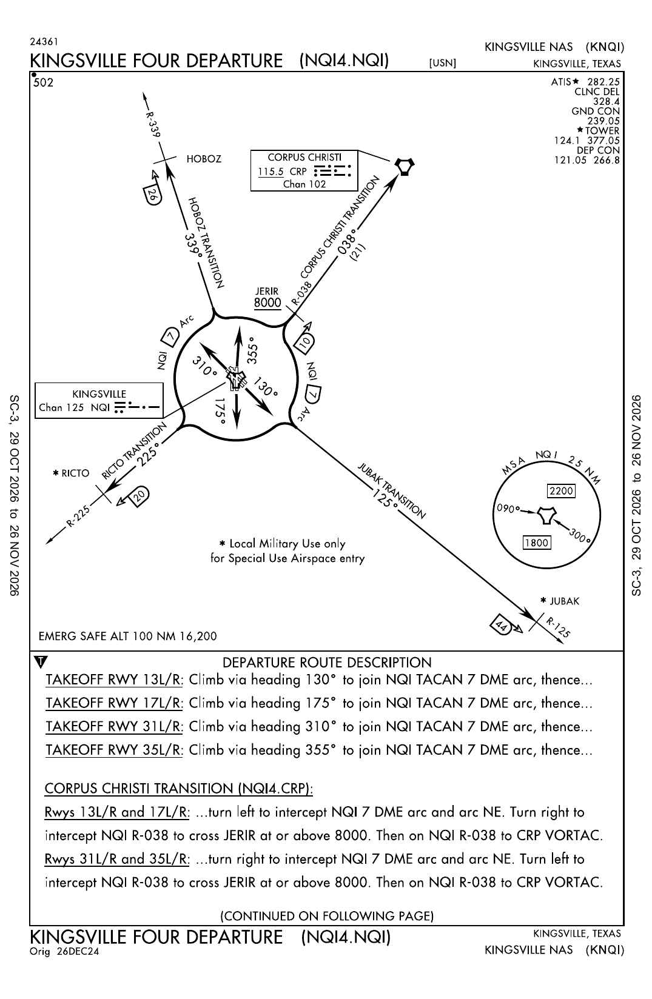
KINGSVILLE FOUR DEPARTURE (NQI4.NQI)20 Q · Orig 26DEC24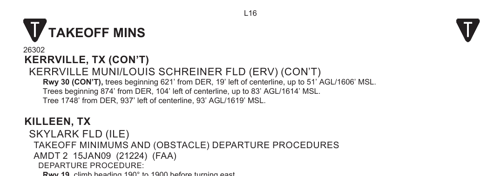
TAKEOFF MINIMUMS & (OBSTACLE) DEPARTURE PROCEDURES10 Q · ORIG 16JUL20 (20198)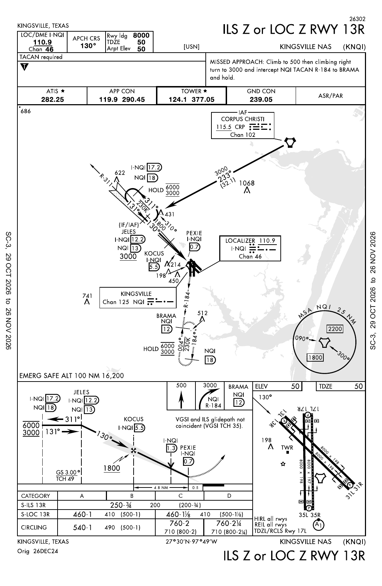
ILS Z or LOC Z RWY 13R26 Q · Orig 26DEC24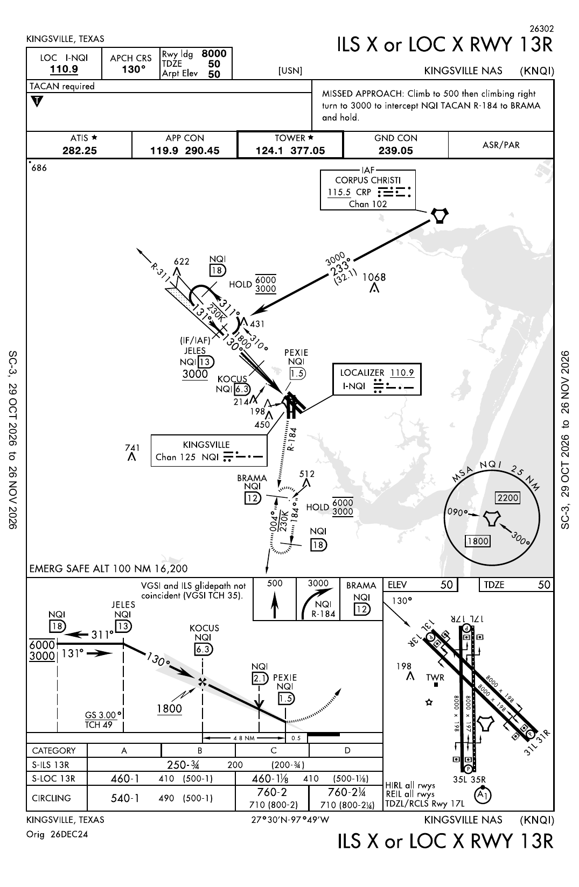
ILS X or LOC X RWY 13R18 Q · Orig 26DEC24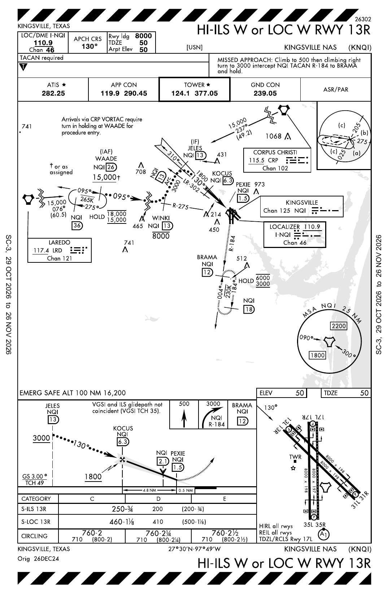
HI-ILS W or LOC W RWY 13R25 Q · Orig 26DEC24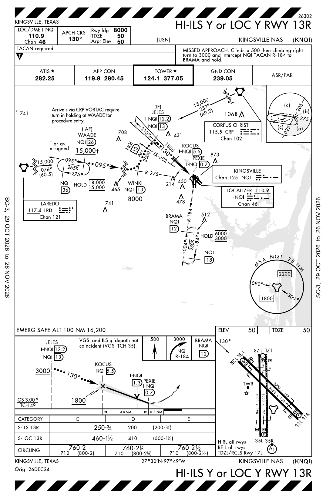
HI-ILS Y or LOC Y RWY 13R25 Q · Orig 26DEC24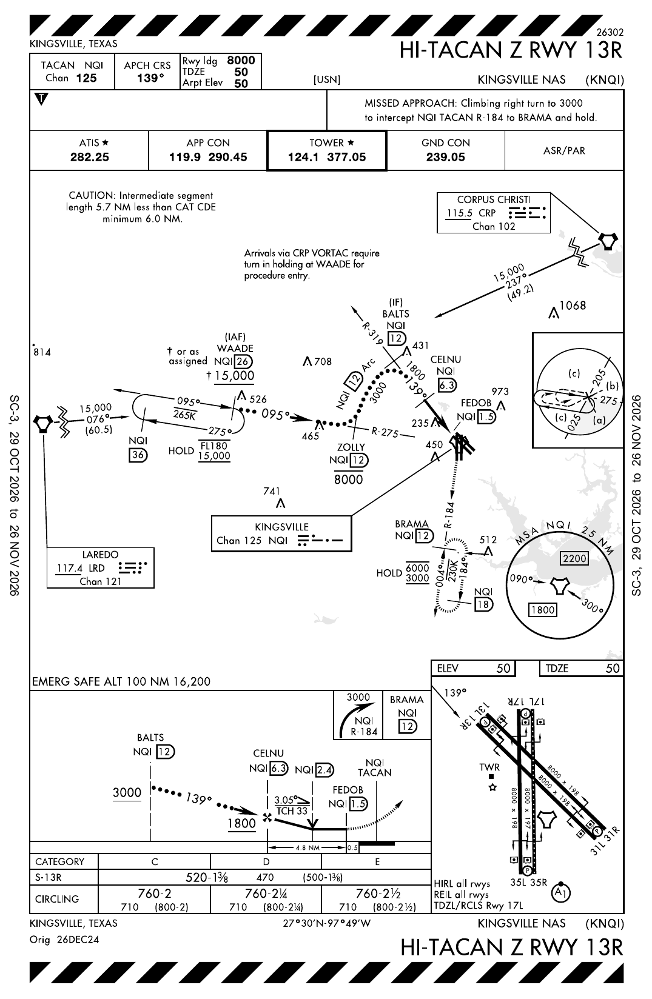
HI-TACAN Z RWY 13R19 Q · Orig 26DEC24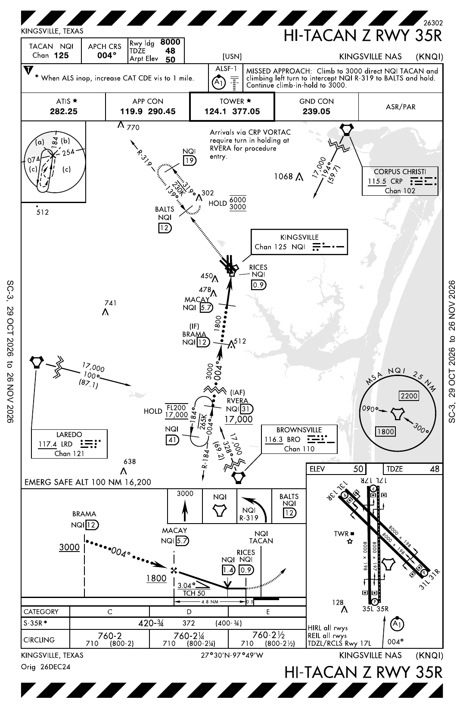
HI-TACAN Z RWY 35R19 Q · Orig 26DEC24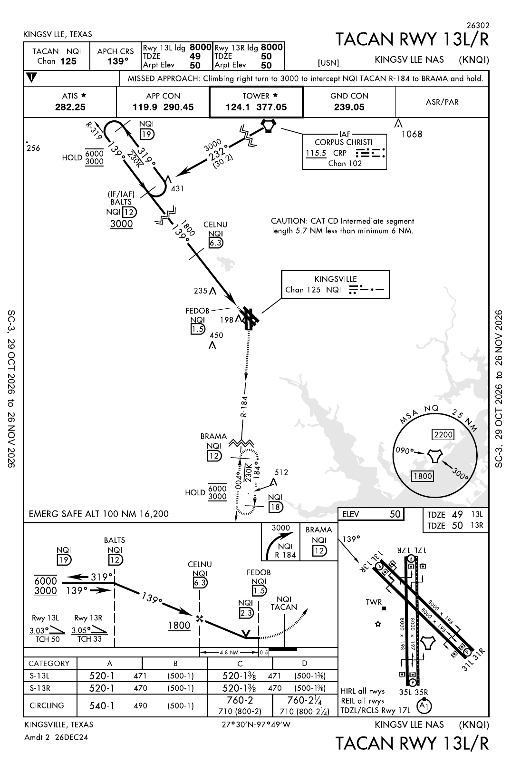
TACAN RWY 13L/R19 Q · Amdt 2 26DEC24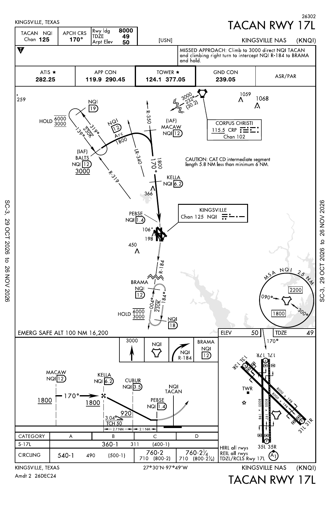
TACAN RWY 17L18 Q · Amdt 2 26DEC24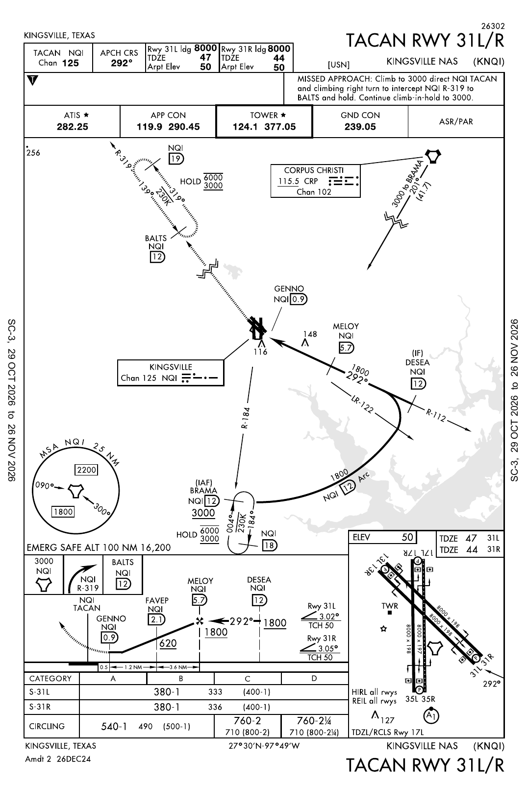
TACAN RWY 31L/R17 Q · Amdt 2 26DEC24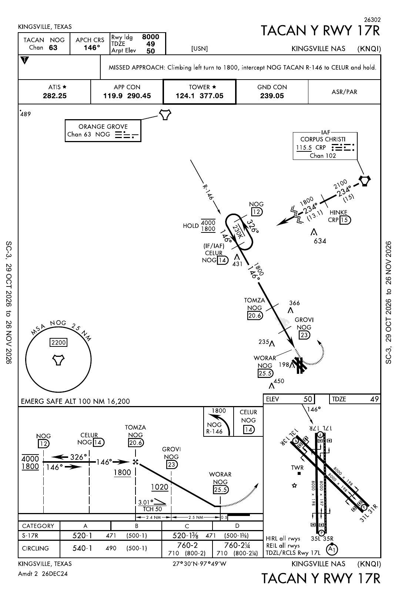
TACAN Y RWY 17R17 Q · Amdt 2 26DEC24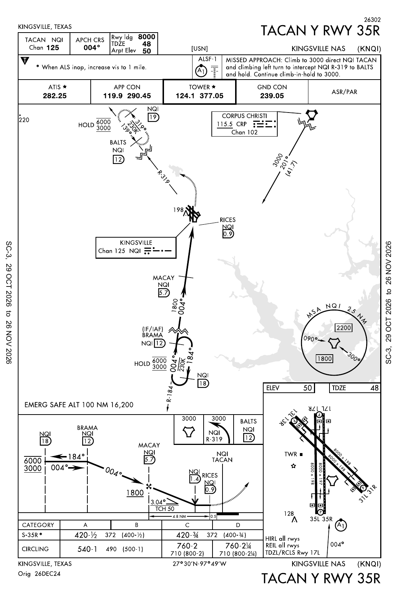
TACAN Y RWY 35R16 Q · Orig 26DEC24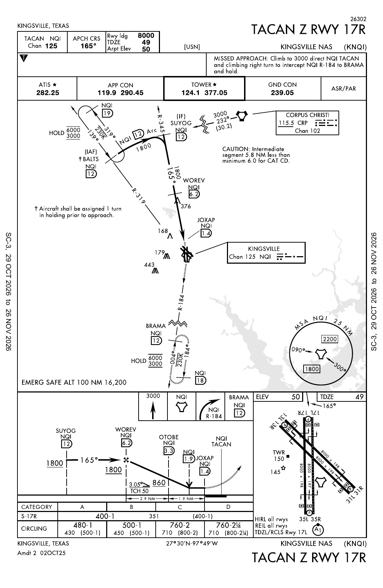
TACAN Z RWY 17R16 Q · Amdt 2 02OCT25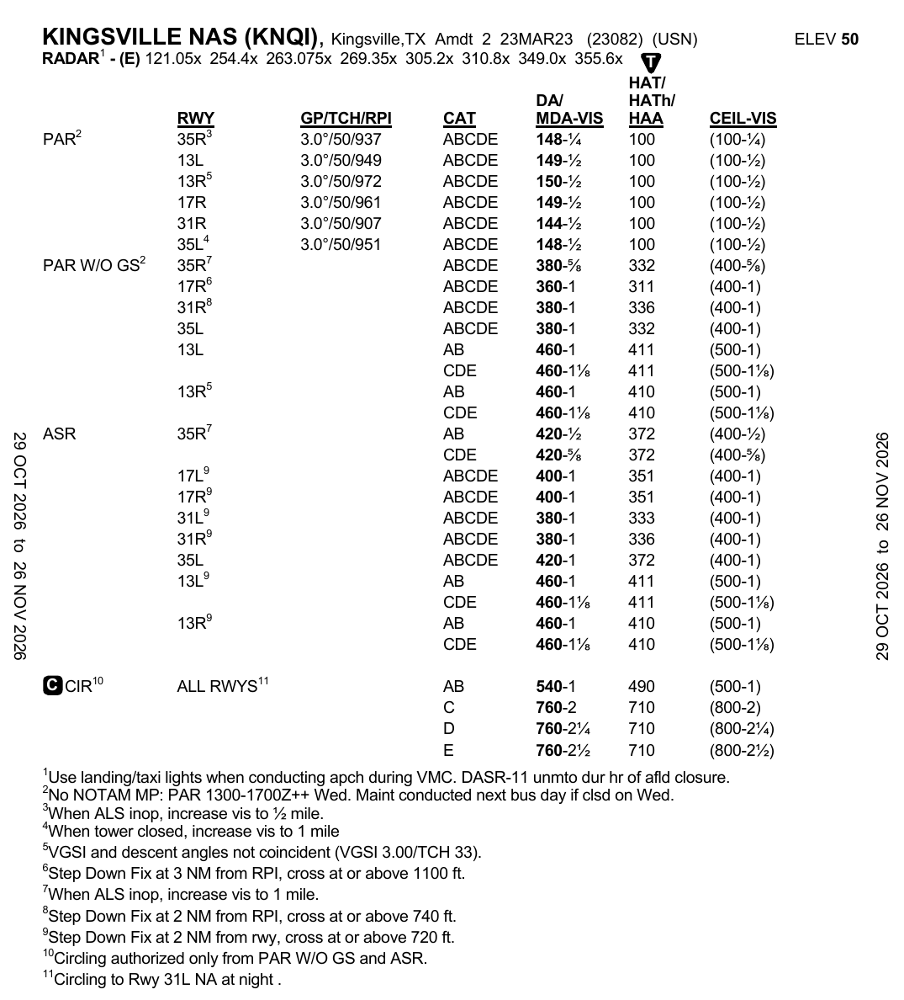
RADAR INSTRUMENT APPROACH MINIMUMS16 Q · Amdt 2 23MAR23 (23082)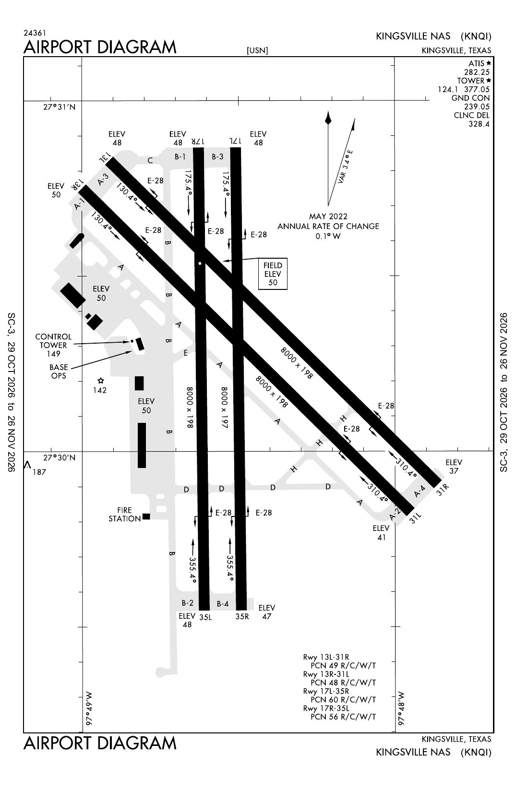
AIRPORT DIAGRAM15 Q ·Source: FAA Digital-Terminal Procedures Publication (aeronav.faa.gov). Training aid only — not for navigation. Plates auto-checked daily by GitHub Actions; questions are written against the cycle noted on each plate page.